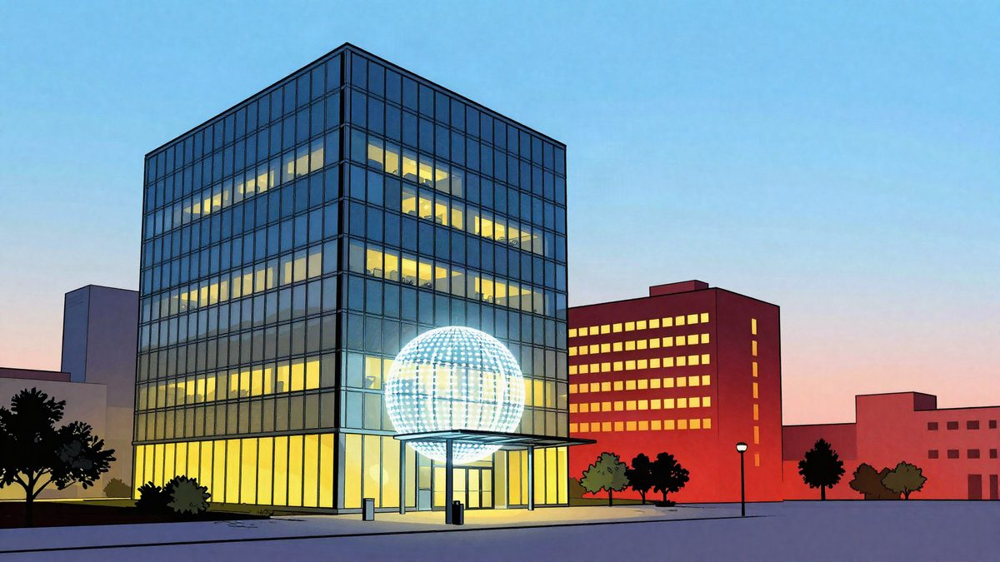
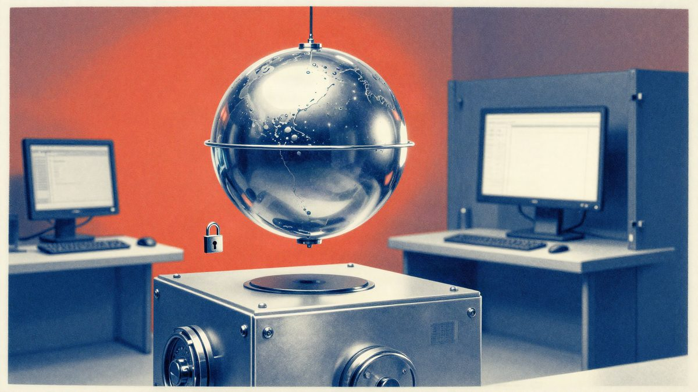

Anthropic je podnio zahtjev za izlazak na burzu, valuacija bi mogla dosegnuti 2 bilijuna dolara

Anthropic je službeno pokrenuo izlazak na burzu i predao S-1 dokumentaciju. U prijavi piše da bi vrijednost tvrtke pri debiju mogla dosegnuti oko 2 bilijuna dolara, uz početak trgovanja sredinom studenoga. Tvrtka je prijavila i snažan rast prihoda, ali i velike troškove te gubitke.
Anthropic je službeno podnio zahtjev za inicijalnu javnu ponudu i predao obrazac S-1 američkoj Komisiji za vrijednosne papire i burzu. Dionice bi se, prema prijavi, trebale kotirati na Nasdaqu pod oznakom ANT. Tvrtka je ranije u lipnju već predala nacrt iste dokumentacije.
Anthropic je naveo da broj dionica i njihova cijena još nisu određeni. Ipak, IPO bi mogao vrednovati tvrtku na oko 2 bilijuna dolara. Debi dionica očekuje se sredinom studenoga.
U dokumentima je Anthropic navela i financijske podatke. Prema prijavi, do 30. lipnja 2026. prikupila je ukupno 141,1 milijardu dolara kapitala. Na taj datum imala je 112,4 milijarde dolara gotovine i ekvivalenata gotovine te 19,3 milijarde dolara kratkoročnih ulaganja.
Tvrtka je u istoj prijavi prikazala i snažan rast poslovanja. Prihodi su joj u tri mjeseca zaključno s 30. lipnjem 2026. porasli 1.368 posto na godišnjoj razini. U istom razdoblju troškovi za compute i infrastrukturu porasli su 300 posto. U nacrtu prijave iz lipnja Anthropic je također navela 8 milijardi dolara operativnog gubitka lani.
U prijavi su navedeni i rizici povezani s razvojem naprednih modela. Anthropic je izdvojio četiri kategorije: zloupotrebu, gubitak kontrole, autoritarnu zloupotrebu i gospodarski poremećaj. Tvrtka je navela i da bi vrlo sposoban frontier model, koji bi mogao nadmašiti kognitivne sposobnosti vrhunskih ljudskih stručnjaka, prolaziti kroz sva digitalna sučelja i djelovati u fizičkom svijetu preko laboratorijske opreme i robotskih sustava, mogao postati široko dostupan unutar nekoliko godina.
Izvor: Engadget
Povezani članci
 Tesla i SpaceX pod istim krovom? Analitičari procjenjuju vrijednost spajanja na 3,74 bilijuna dolara20. listopada 2026.
Tesla i SpaceX pod istim krovom? Analitičari procjenjuju vrijednost spajanja na 3,74 bilijuna dolara20. listopada 2026.
Claude tvrtke Anthropic obišao je plaćeni pristup podacima o izborima u Georgiji27. listopada 2026. Recursive je objavio Flint, besplatni coding model za laptop koji je velikim dijelom izgradio AI21. listopada 2026.
Recursive je objavio Flint, besplatni coding model za laptop koji je velikim dijelom izgradio AI21. listopada 2026.